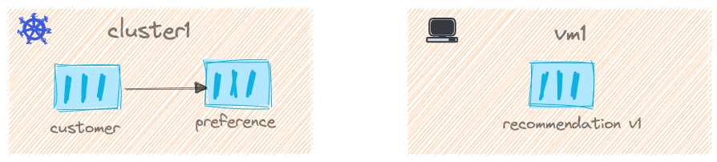

Deploy applications on Kubernetes
We now have the required environment Kubernetes, Gloo and Istio setup, as part of this chapter let us setup the services that will interact.
For this demo we will use three simple microservices namely customer, preference and recommendation; customer and preference services will be deployed on the Kubernetes cluster1 and the recommendation will be on the vm1.

All the applications used this demo are available as helm charts in my GitHub repo, let us add that helm repo,
helm repo add istio-demo-apps https://github.com/kameshsampath/istio-demo-apps
helm repo update
Now doing a helm search repo istio-demo-apps should show the following apps,
NAME CHART VERSION APP VERSION DESCRIPTION
istio-demo-apps/customer 0.1.0 1.0.0 A Helm chart to deploy customer demo application
istio-demo-apps/preference 0.1.0 1.0.0 A Helm chart to deploy Preference demo application
istio-demo-apps/recommendation 0.1.0 1.0.0 A Helm chart for A Helm chart to deploy recommendation demo application
Enable automatic sidecar injection on the default namespace,
kubectl label ns default istio.io/rev=1-11-5 --overwrite
Important
Since we use revision based we use istio.io/rev label. If you have already labelled the namespace with istio-injection=enabled then remove it by,
kubectl label ns default istio-injection-
Deploy customer service,
helm install --kube-context="$CLUSTER1" \
customer istio-demo-apps/customer \
--set enableIstioGateway="true"
Resources¶
Pods and Services¶
kubectl --context="$CLUSTER1" get svc,pods
NAME TYPE CLUSTER-IP EXTERNAL-IP PORT(S) AGE
service/kubernetes ClusterIP 172.18.0.1 <none> 443/TCP 39h
service/customer ClusterIP 172.18.7.18 <none> 8080/TCP 3m9s
NAME READY STATUS RESTARTS AGE
pod/customer-59f5854d89-cm84k 2/2 Running 0 3m9s
Gateway and Virtual Services¶
kubectl --context="$CLUSTER1" get gw,svc
NAME AGE
gateway.networking.istio.io/customer-gateway 4m57s
NAME GATEWAYS HOSTS AGE
virtualservice.networking.istio.io/customer-v1-vs ["customer-gateway"] ["*"] 4m57s
Interacting with Services¶
Retrieve the Istio Ingress Gateway url to access the application,
export INGRESS_GATEWAY_IP=$(kubectl --context ${CLUSTER1} -n istio-gateways get svc ingressgateway -o jsonpath='{.status.loadBalancer.ingress[0].*}')
export SVC_URL="${INGRESS_GATEWAY_IP}/customer"
Call Service¶
Call the service using the script,
$DEMO_HOME/bin/call_service.sh
Poll Service¶
Poll the service using the script,
$DEMO_HOME/bin/poll_service.sh
Using Default Browser¶
Open the URL in the browser open http://$SVC_URL.
The service calls will fail with error,
customer => Service host 'http://preference:8080' not known.
Let us deploy preference service,
helm install --kube-context="$CLUSTER1" preference istio-demo-apps/preference
Now getting pods and services should show the following output,
kubectl --context="$CLUSTER1" get svc,pods
NAME TYPE CLUSTER-IP EXTERNAL-IP PORT(S) AGE
service/kubernetes ClusterIP 172.18.0.1 <none> 443/TCP 39h
service/customer ClusterIP 172.18.7.18 <none> 8080/TCP 30m
service/preference ClusterIP 172.18.6.50 <none> 8080/TCP 73s
NAME READY STATUS RESTARTS AGE
pod/customer-6bbb45d7db-5db6l 2/2 Running 0 11m
pod/preference-b95d64c99-9wjfp 2/2 Running 0 72s
Now calling the customer service again,
curl $SVC_URL
The command should shown an output like,
customer => preference => Service host 'http://recommendation:8080' not known.%
Excellent! We not got our Kubernetes services ready. In next chapter lets deploy the recommendation service and make services to work together.